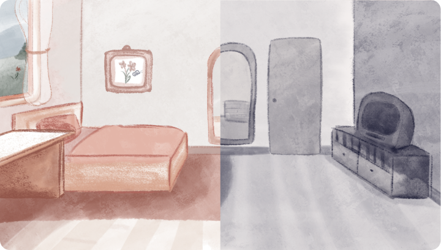

- Role: Storywriting, Illustration, Animation
- Dates: October 2020 - March 2021
- Tools: Notion, Adobe CC, Procreate
- Team: Hong Ngoc Le
Task
“pupa” is a mix of frame by frame as well as keyframe animation which was created during my 3rd semester in the module “Interactive Motion Media 2”.
A world in between
The word “pupa” describes the in-between stage where a larva is in between its past life and its new life form. This short film is about a girl realizing that she is in an in-between stage of life. Trying to figure out why she is stuck in the second world, she is remembering parts of her past life. This includes the important people to finally move on to her new transformation and relay her last goodbyes.
Process
After finalizing the storyline, we started storyboarding each scene. Since it was important to depict the different worlds, it was important to illustrate each background in two different styles. Continuing with general body movements of each character. We assembled repetive patterns in Adobe After Effects and the finishing touches were done in Final Cut Pro.